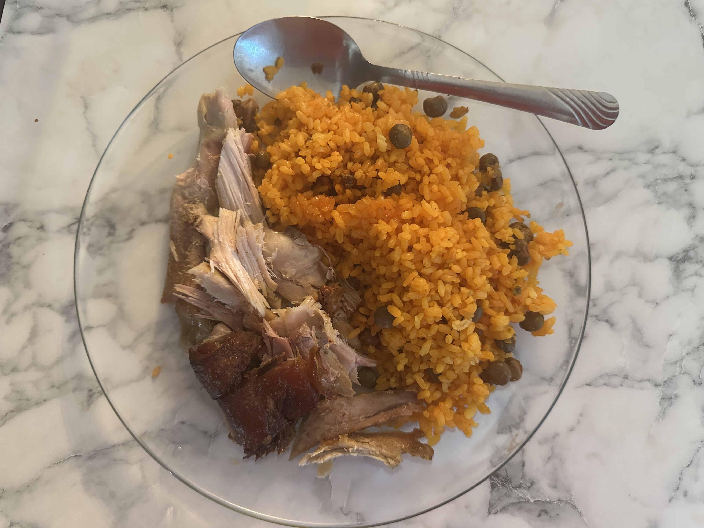

¿Cómo funciona una buena alimentación?
|
Una buena alimentación le da al cuerpo la energía y los nutrientes que necesita para rendir bien en el día a día. Consumir comidas simples pero saludables como huevo, atún, ensaladas frescas, pollo a la plancha, arroz o avena ayuda a que el cuerpo se mantenga fuerte, concentrado y con mejor ánimo. Los carbohidratos buenos como el arroz, las papas o la avena te dan energía estable; las proteínas como el atún, el huevo o el pollo ayudan a recuperar los músculos; y alimentos como el aguacate o las nueces aportan grasas saludables que mejoran la absorción de vitaminas. En resumen, comer balanceado te ayuda a rendir mejor tanto en los estudios como en el gimnasio. Algo tan simple como añadir más ensaladas, frutas o una comida básica como arroz con pollo puede marcar una diferencia en cómo te sientes durante el día. |

|
La importancia de una buena salud
|  |
Mantener una buena alimentación ayuda a prevenir enfermedades y mantener el cuerpo funcionando correctamente. Comidas sencillas como pollo al horno, arroz, ensaladas, huevo o frutas frescas aportan proteínas, vitaminas y energía estable para el día. Estos alimentos fortalecen el sistema inmune y ayudan a que la circulación, la digestión y la recuperación muscular sean más eficientes. Consumir vegetales, granos integrales y proteínas magras como atún, pavo, pollo o legumbres mantiene el cuerpo con energía y mejora el rendimiento físico y mental. Además, una alimentación balanceada ayuda a dormir mejor, reduce la fatiga y mejora la calidad de vida en general. |
La importancia de una buena cena
|
Una buena cena le permite al cuerpo recuperarse mientras duermes y te prepara para el siguiente día. Incluir alimentos como huevo, pollo a la plancha, arroz, vegetales salteados o atún aporta proteínas y carbohidratos saludables que ayudan a reconstruir los músculos y mantener niveles de energía estables durante la noche. Cenar balanceado también mejora el sueño, reduce la fatiga del día siguiente y hace que despiertes con más energía, mejor ánimo y mayor rendimiento tanto en los estudios como en el gimnasio. |

|